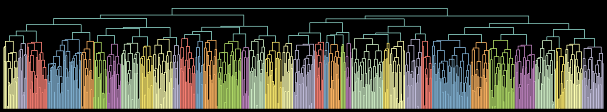
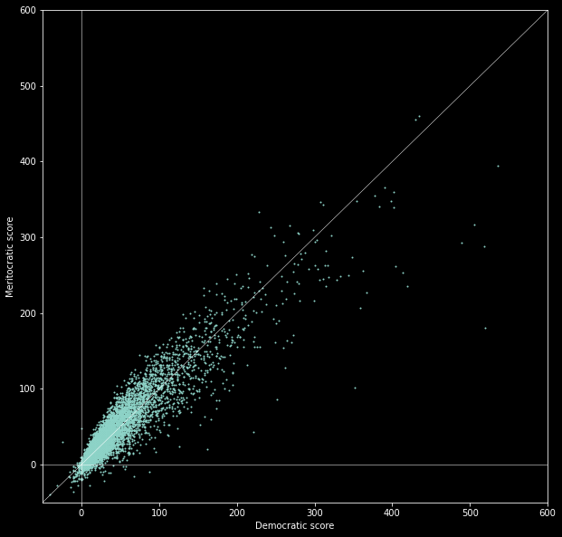

Code
All the code can be found in github.com/filyp/tree-of-tags.
Clustering
First, we calculate which tags cooccur with each other. With this we create a graph where tags are nodes, and edge weights are the number of their cooccurences.
This graph is then clustered hierarchichally with the Krakow algorithm. It outputs a tree, that you can climb to narrow down on some subtopic.
There are many possible ways to cluster a graph. For each forum I chose 3 best distinct clusterings. I documented this process in this notebook.
Here is an example of such a cluster-tree:
Alternative trees
The default tree is named "a". You can also try out two others ("b" and "c"), by changing the url from:
https://filyp.github.io/tree-of-tags/ea/a...to:
https://filyp.github.io/tree-of-tags/ea/b...
https://filyp.github.io/tree-of-tags/ea/c...
Let me know if you find one of them better than the default one - I'm still deciding which is best.
Democracy and meritocracy
Democratic and meritocratic scores are computed as:
for post in all_posts:
post.smallBalance = post.smallUpvotes - post.smallDownvotes
post.bigBalance = post.bigUpvotes - post.bigDownvotes
avg_big_vote_component = np.mean([p.baseScore - p.smallBalance for p in all_posts])
avg_big_balance = np.mean([p.bigBalance for p in all_posts])
avg_vote_power = avg_big_vote_component / avg_big_balance
for post in all_posts:
post.democraticScore = int(post.smallBalance + avg_vote_power * post.bigBalance)
post.meritocraticScore = int(2 * post.baseScore - post.democraticScore)
So democratic scoring assumes that each user has the same voting power. The average voting power for EA happens to be around 4. And meritocratic scoring is defined as an "inverse" of democratic.
It turns out that the difference between them isn't that big - they have 93% correlation. Which I think is good, because it means there is not much tension between what newcomers and forum veterans value.
Still, it seems that in topics that I know well, meritocratic scoring tends to give me more interesting content. Let me know if you notice anything else.
Other
The logo was generated with Stable Diffusion (+ some manual finishing touches).